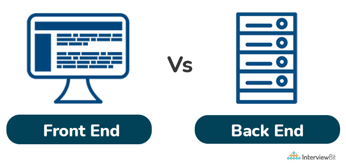

Əgər sən yenicə veb proqramlaşdırmanı öyrənməyə başlamısansa deməli frontend və backend termini ilə tez-tez qarşılaşmısan , amma əslində nə olduğunu bilmirsən. Sən bu sahədə yenicə başlamısansa ilkin olaraq hansının hansı olduğunu bilməyin sənin üçün çətin olar.
Frontend və backend inkişafları bir-birindən fərqlənsə də onlar sanki eyni bir qəpiyin iki tərfidir. Veb saytın funksionallığı bir tərəfdə ünsiyyət quraraq digər tərəfdən effektiv fəaliyyət göstərən tərəflərə əsaslanır. Onların veb proqramlaşdırmada rolları böyükdür. Bəs nədən başlamalıyıq ?
Front end veb brouzerlərdə görünən hissədir. Həmçinin “client-side” (istifadəçi hissə) də adlandırılır. O özündə hər şeyi : yazıları , rəngləri , düymələri , şəkilləri və nəzarətçi meyunu da ; birləşdirir.
Bu vaxta qədər statik veb səhifələrdən danışmışdıq. Statik səhifələrdə məzmunu dəyişmək mümkün deyil (sənədi yenidən redaktə etmək nəzərdə tutulmur) Bunun üçün isə dinamik səhifələrdən istifadə olunur. Dinamik səhifələr Verilənlər bazasının idarə etmə sistemləri ilə əlaqəli olub onun əsasını təşkil edir.
Daha ətralı| Front End | Back End |
| HTML | PHP |
| CSS | JAVA |
| BOOTSTRAP | C# |
| Javascript | Python |
| REACT JS | C++ |
| NEXT JS | R |